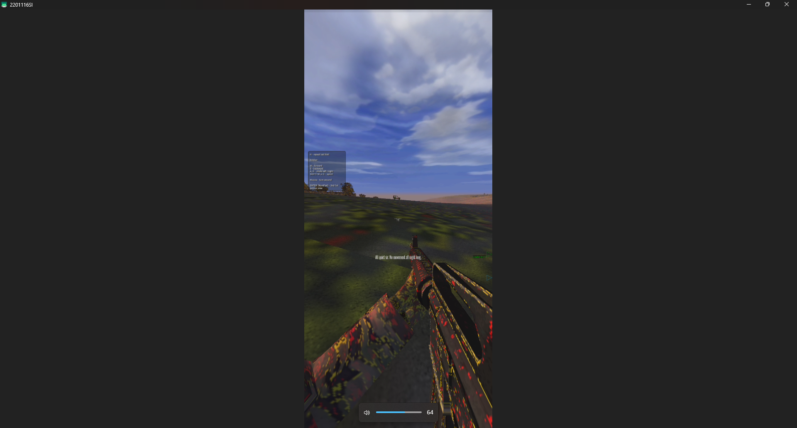
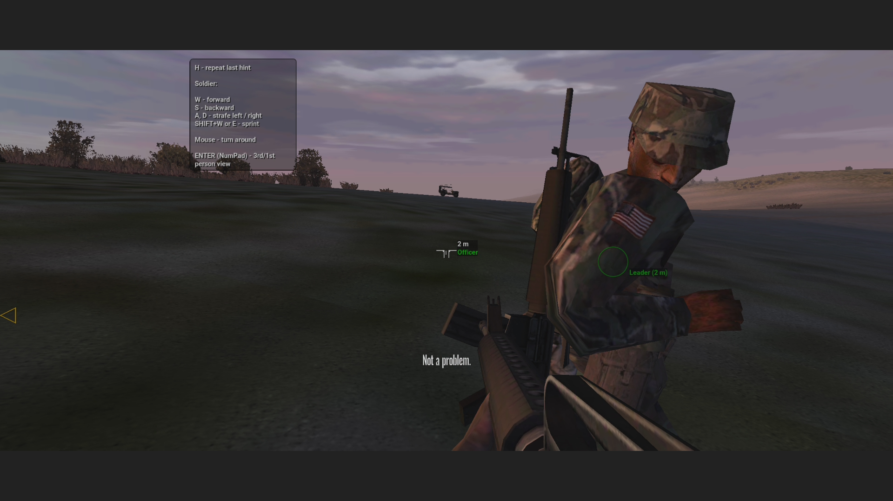
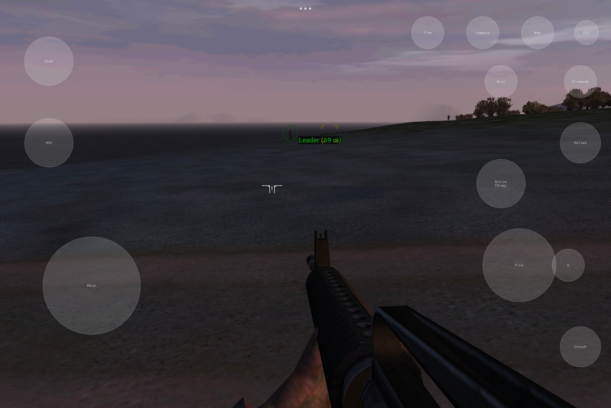
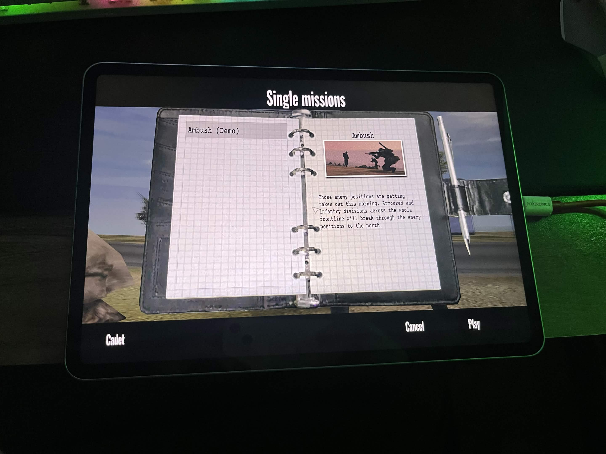

Porting ARMA CWA to Android ARM64
It all started with a random ping. My friend @remivoire asked if anyone wanted to take a crack at porting the CWR engine (Cold War Rearmed, essentially ARMA: Cold War Assault) to Android ARM64. Bohemia Interactive had just open sourced the Arma CWA repository and modernized it with C++20 and a Linux build target. I had some free time, and it sounded like a fun challenge. How hard could it be to get a 20 year old game engine running on modern mobile hardware?
Spoiler: harder than I thought. Here is the highly technical and extremely exasperating saga of how I got CWR running on Android. In this massive deep dive, I am going to explore the architecture of the new PoseidonGLES32 engine, look at the code that powers it, and laugh at the... interesting bugs I encountered along the way.
Graphics Backend Implementation
Let us talk about the actual code in the PoseidonGLES32 directory first, because it is the beating
heart of this entire port. The core of the rendering loop lives in EngineGLES32.cpp. This class
manages the entire graphics state. It implements all the virtual functions required by the base game engine's
abstract renderer interface. Here is a glimpse into how I initialize the Android-specific GLES 3.2 context
through SDL:
// request the correct gl context profile for the platform.
#ifdef __ANDROID__
SDL_GL_SetAttribute(SDL_GL_CONTEXT_MAJOR_VERSION, 3);
SDL_GL_SetAttribute(SDL_GL_CONTEXT_MINOR_VERSION, 2);
SDL_GL_SetAttribute(SDL_GL_CONTEXT_PROFILE_MASK, SDL_GL_CONTEXT_PROFILE_ES);
SDL_GL_SetAttribute(SDL_GL_CONTEXT_FLAGS, SDL_GL_CONTEXT_DEBUG_FLAG);
#else
// request an OpenGL 3.3 core profile.
SDL_GL_SetAttribute(SDL_GL_CONTEXT_MAJOR_VERSION, 3);
SDL_GL_SetAttribute(SDL_GL_CONTEXT_MINOR_VERSION, 3);
SDL_GL_SetAttribute(SDL_GL_CONTEXT_PROFILE_MASK, SDL_GL_CONTEXT_PROFILE_CORE);
#endif
Because I could not use the fixed function pipeline of legacy OpenGL, I had to write custom shaders for
everything. EngineGLES32_Shaders.cpp is an absolute beast of a file. It contains the source code
for all my vertex and fragment shaders. I partitioned my uniform buffers by update frequency. Vertex shader
slots are strictly mapped so 2D UI elements cannot accidentally clobber the 3D projection matrix. I even packed
local light data directly into the vertex shader buffer for the night time rendering.
layout(std140) uniform VSConstants {
mat4 proj; // c0 to c3
mat4 view; // c4 to c7
mat4 world; // c8 to c11
vec4 sunDir; // c12
vec4 ambient; // c13
vec4 diffuse; // c14
vec4 emissive; // c15
vec4 fogParam; // c16
vec4 camPos; // c17
vec4 specular; // c18
};Matrix and Projection Pipeline
To truly appreciate the complexity of EngineGLES32_Shaders.cpp, we need to dive into the linear
algebra happening behind the scenes. In the original immediate mode pipeline, Bohemia Interactive utilized the
fixed function matrix stack. They would call glPushMatrix, apply rotations and translations, and
then glPopMatrix. On modern hardware, all of this matrix multiplication must be calculated
manually.
I implemented a custom math library to handle 4x4 matrix operations, calculating the model, view, and projection matrices. The view matrix is constructed by taking the camera position, calculating the forward vector using spherical coordinates, and applying a cross product with the world up vector to find the right vector. This creates the orthogonal basis vectors required to transform world space coordinates into view space.
Here is how the projection matrix is converted for the graphics API, explicitly mapping the 4x4 elements and dynamically applying depth bias for z-fighting mitigation:
void ConvertProjectionMatrix(GfxMatrix& mat, Matrix4Val src, float zBias)
{
mat._11 = src(0, 0); mat._12 = 0; mat._13 = 0; mat._14 = 0;
mat._21 = 0; mat._22 = src(1, 1); mat._23 = 0; mat._24 = 0;
float c = src(2, 2);
float d = src.Position()[2];
if (zBias > 0)
{
float zMult = 1.0f - zBias * 1e-7f;
float zAdd = -zBias * 1e-6f;
c = src(2, 2) * zMult + zAdd;
d = src.Position()[2] * zMult;
}
mat._31 = 0; mat._32 = 0; mat._33 = c; mat._34 = 1;
mat._41 = 0; mat._42 = 0; mat._43 = d; mat._44 = 0;
}All of these matrices are uploaded to the GPU via Uniform Buffer Objects (UBOs). By packing the view and projection matrices into a single UBO that is shared across all shader programs, we drastically reduce the bandwidth required per frame. Instead of updating uniforms individually, I map the buffer once, write the 128 bytes of matrix data, and unmap it.
Geometry and Vertex Buffer Operations
The geometry pipeline also had to be completely rewritten. The old engine loved to dispatch thousands of tiny
triangles one by one using immediate mode. EngineGLES32_Mesh.cpp intercepts these legacy mesh
formats and translates them into modern interleaved vertex arrays. It extracts positions, normals, and UV
coordinates and packs them tightly.
void EngineGLES32::BeginMesh(TLVertexTable& mesh, const Poseidon::render::LegacySpec& spec)
{
BeginScreenPass();
_mesh = &mesh;
AddVertices(mesh.VertexData(), mesh.NVertex());
}
The real heavy lifting happens in EngineGLES32_VertexBuffer.cpp. Because I am constantly generating
dynamic geometry for things like particle effects and UI elements, I rely heavily on vertex buffer orphaning. I
initially set the dynamic buffer size to 32k. But I noticed that Adreno GPUs were choking on our allocations,
causing terrible frame pacing and stuttering. The Qualcomm driver simply could not keep up. I bumped the vertex
buffer size to 128k, which finally gave the GPU enough breathing room to avoid stalling the pipeline.
Here is the vertex buffer update logic from EngineGLES32_VertexBuffer.cpp demonstrating how dynamic
memory mapped buffers are allocated using glBufferData:
bool VertexBufferGLES32::Init(const Shape& src, VBType type)
{
_dynamic = (type == VBDynamic || type == VBSmallDiscardable);
_vertexCount = src.NVertex();
glGenVertexArrays(1, &_vao);
GLES32Bind::Vao(_vao);
GLenum vbUsage = _dynamic ? GL_DYNAMIC_DRAW : GL_STATIC_DRAW;
glGenBuffers(1, &_vbo);
glBindBuffer(GL_ARRAY_BUFFER, _vbo);
glBufferData(GL_ARRAY_BUFFER, _vertexCount * sizeof(SVertex), nullptr, vbUsage);
CopyVertices(src);
// ... IBO initialization and attribute layouts setup ...
return true;
}API Selection: ANGLE vs OpenGL ES
Before we even wrote the graphics backend, we had a major architectural decision to make. The CWR codebase
originally used legacy OpenGL. It expects a desktop environment, specifically x86 or x86_64 Linux or Windows.
Cross compiling for ARM64 meant stripping out a lot of hardcoded assumptions, but the graphics API was the
elephant in the room. The entire engine relied on immediate mode rendering, glBegin and
glEnd, fixed function pipelines, and Matrix stacks.
I deliberated on Discord for a while. I considered using ANGLE, which translates OpenGL 3.3 calls to Vulkan
under the hood. It seemed like the easiest path because I wouldn't have to rewrite the entire graphics backend.
But after some discussion, I realized that ANGLE wrappers would add too much overhead for a mobile device with
strict thermal limits. I eventually settled on writing a completely native OpenGL ES 3.2 backend from scratch,
which became PoseidonGLES32. GLES 3.2 gave us access to advanced texture formats and compute
shaders, which I desperately needed.
Build System and Concurrency Issues
Before I even got to see a black screen, I had to fight the build system. The project was using vcpkg, and getting it to play nicely with Android's Gradle build tools and the NDK was a massive headache. There were countless failures just trying to get dependencies like SDL2 and OpenAL to cross compile properly for the ARMv8 architecture.
Once it finally built, the crashes started. One of the most annoying initial bugs was the game crashing entirely upon exiting. It turned out that global destructors were destroying mutexes while other threads were still trying to use them. The Android OS hates it when apps crash on exit, throwing up annoying dialogue boxes. To fix this, I had to intentionally leak the global mutex by allocating it on the heap. You can see this in commit 13db10b:
-std::mutex g_lock;
+static std::mutex& GetLock() {
+ static std::mutex* m = new std::mutex();
+ return *m;
+}I also had issues with the game window resizing incorrectly on startup. The engine thought it was running at 1080p, but the physical surface was completely different due to Android UI scaling. Remivoire fixed this by querying the exact pixel dimensions from the SDL window directly if the platform was Android, bypassing the logical resolution entirely (commit c7a25ef).
Architecture-Specific Font Parsing
When the game finally rendered something to the screen, all the text was completely garbled. It looked like an
alien language. It took a while to figure out what went wrong because the font parsing code in
Pactext.cpp looked completely fine.
The culprit? Architecture specific defaults for the char data type. On x86 and x64 platforms, C++
compilers default char to a signed type. But on ARM architecture, compilers default
char to unsigned. The game's legacy LZW font decompression algorithm was relying on integer
underflow and negative numbers to decode the characters!
Fixing this was as simple as casting a variable to a signed char, but finding it was a nightmare.
This was patched in commit 13b43f1:
- csum += (char)c;
+ csum += (signed char)c;Hardware Texture Compression Limits
At this point, Remivoire excitedly messaged me:
HOLY SHIT IT RUNS LMFAOO THE GRAPHICS ARE BUGGED
The game ran, but all the textures were pitch black or corrupted. Checking the logcat revealed a very painful truth:
E/Adreno-GLES: <gl2_glTexImage2D:517>: GL_INVALID_ENUM
E/cwr_engine: Failed to load texture: data/textures/grass.paa
ARMA CWA uses a custom texture format called .paa, which is essentially just a wrapper around
standard DXT1 and DXT5 compression formats. Desktop GPUs have supported DXT natively in hardware for over two
decades.
However, Qualcomm recently decided to remove the GL_EXT_texture_compression_s3tc extension from
their OpenGL ES drivers starting with the Adreno 6xx series. The physical GPU hardware is fully capable of
decoding DXT, but the driver explicitly blocks it. Because I was using OpenGL ES, the API refused to accept our
DXT textures.
I was faced with a choice. I could transcode all the game assets into a mobile friendly format like ASTC, which would require players to download massive asset packs. Or, I could decode the DXT textures into raw RGBA formats dynamically at runtime. I chose the latter to keep things simple for end users.
I integrated a tiny single file C library called bcdec into our texture loader. When the game loads
a DXT texture on an Adreno device, I intercept it, decode the blocks into raw pixel data, and upload the
uncompressed RGBA array to the GPU. You can check commit 198efaf for the gory details.
#ifdef ANDROID
// adreno dxt texture compression fallback
void decompress_dxt_to_rgba(const uint8_t* compressed, uint8_t* rgba, int width, int height, bool has_alpha) {
for (int i = 0; i < height; i += 4) {
for (int j = 0; j < width; j += 4) {
uint8_t* block = rgba + (i * width + j) * 4;
if (has_alpha) {
bcdec_bc3(compressed, block, width * 4);
compressed += BCDEC_BC3_BLOCK_SIZE;
} else {
bcdec_bc1(compressed, block, width * 4);
compressed += BCDEC_BC1_BLOCK_SIZE;
}
}
}
}
#endifThe textures finally loaded correctly, but because I was passing uncompressed RGBA data instead of compressed blocks, my memory bandwidth usage skyrocketed and performance was absolutely terrible. I was rendering the classic low poly soldier models, but at terrible framerates.

Universal ETC2 Texture Transcoding
I thought I was done with textures after fixing the Adreno driver issues using bcdec. But the
nightmare did not end there. While Adreno GPUs could technically handle the uncompressed RGBA fallback, the
massive bandwidth penalty was destroying performance. Furthermore, ARM Mali GPUs presented a completely
different set of problems.
Mali GPUs also do not support DXT natively. If I uploaded DXT to a Mali chip, it either failed entirely or consumed exorbitant amounts of VRAM, causing the game to crash with out of memory errors after just a few minutes of gameplay. The uncompressed RGBA fallback I used for Adreno was too heavy for lower end Mali devices.
To fix this, I implemented another interception layer in TextureGLES32_Loading.cpp. I decompress
the DXT blocks back to RGBA on the CPU, then immediately recompress them into ETC2 blocks using a fast software
encoder called etcpak. ETC2 is natively supported everywhere on mobile, keeping VRAM usage low and
bandwidth within acceptable limits. Because the RGBA fallback was heavily bottlenecking Adreno devices as well,
I ultimately applied this etcpak transcoding pipeline universally to BOTH Adreno and Mali chips.

State Tracking and Engine Optimization
With the graphics actually rendering, I had to fix the performance bottlenecks. I spent days profiling the engine on various Android devices.
The first major issue was a massive CPU spike happening in TextureBankGLES32_Cache.cpp. I
discovered that the engine was querying HasGlExtension every single time it tried to bind a
texture. On desktop drivers, querying extensions is relatively fast, but on Android, it caused huge string
parsing overhead. I cached the extension checks into a boolean array during initialization to resolve the
constant stuttering.
// query and log once per run
static bool s_budgetInitialized = false;
static bool s_hasNvidia = false;
static bool s_hasAmd = false;
if (!s_budgetInitialized)
{
s_hasNvidia = HasGlExtension("GL_NVX_gpu_memory_info");
s_hasAmd = HasGlExtension("GL_ATI_meminfo");
s_budgetInitialized = true;
}
I also built a sophisticated state tracker inside GLES32BindCache.cpp. Mobile GPU drivers are
notoriously slow when it comes to state changes. Instead of making raw OpenGL calls, the engine asks the cache
to bind a texture or enable depth testing. The cache packs these requests into a state descriptor and diffs it
against what is currently active on the GPU. If nothing has changed, it silently skips the driver call entirely.
This single optimization recovered almost twenty frames per second on lower end devices.
void Tex2D(int unit, unsigned int tex)
{
++g_texReq;
if (unit >= 0 && unit < kUnits && g_tex[unit] == tex)
{
ActiveUnit(unit);
return;
}
ActiveUnit(unit);
glBindTexture(GL_TEXTURE_2D, tex);
if (unit >= 0 && unit < kUnits)
g_tex[unit] = tex;
++g_texBind;
}Audio Backend and AI State Desync
Finally, the most bizarre bug of all. When testing the very first mission of the campaign, the squad leader is supposed to give a voice command and then run to a jeep. Instead, he would just stand there indefinitely, staring into space. The mission was completely softlocked because the AI would refuse to move.
It turned out this was directly tied to the audio engine. The OpenAL backend on Android was failing to initialize correctly due to dynamic loading issues, causing it to fall back to a "dummy" audio device. The dummy backend creates dummy waves for dialogue playback. However, these dummy waves lacked a simulation tick and never transitioned to a terminated state. The game engine's AI dialogue state check would hang forever, waiting for the leader to finish speaking, which he technically never did.
To fix this, I threw out the dynamic loader entirely for Android. I directly linked Google's static
Oboe library (a high-performance Android audio library) and patched the OpenAL-Soft vcpkg port to
use the Oboe backend instead of OpenSL. I also added logic to clear the deferred playing flag in
SoundSystemOAL.cpp. By restoring native audio playback, the AI state machine finally received the
"audio finished" signal, and the squad leader happily ran to his jeep. You can view the exact patch in commit 52f8fe4.
// clear the deferred flag
if (wave.playing || wave.loadError || wave.stateTerminated)
{
wave.wantPlaying = false;
}Render Queues and Draw Ordering
With geometry loaded, I needed to draw it in the correct order. EngineGLES32_Queue.cpp implements a
highly optimized render queue system. Mobile GPUs use tile based deferred rendering (TBDR). To optimize for this
architecture, I sort all my draw calls meticulously.
Opaque objects are sorted front to back. By drawing the closest objects first, I maximize early depth testing rejections. The GPU can completely skip executing the fragment shader for pixels that are occluded by a wall in front of them. This saves massive amounts of battery and thermal headroom.
Transparent objects, like foliage, smoke, and glass, are placed in a separate queue and sorted strictly back to front. This ensures proper alpha blending. If you draw a glass window before the building behind it, the building will not render through the glass because the depth buffer will reject it. I utilized a fast radix sort implementation to process thousands of draw calls in a fraction of a millisecond.
// bind the vertex buffer
glBindBuffer(GL_ARRAY_BUFFER, _vbo);
// draw
FlushVSConstants();
FlushPSConstants();
glDrawElements(GL_TRIANGLES, n, GL_UNSIGNED_SHORT, (void*)(intptr_t)(indexOffset * sizeof(WORD)));
++Poseidon::gPerfDrawCalls;Touchscreen UI Input Translation
Rendering the game was only half the battle. ARMA CWA is a complex tactical shooter with dozens of keybinds. Translating that to a touchscreen interface required some serious engineering. I integrated SDL2's virtual joystick overlay, but the legacy UI engine was tightly coupled to physical mouse coordinates.
In EngineGLES32_2D.cpp, I had to implement a coordinate translation layer. Android touch events are
reported in physical screen pixels, but the legacy UI expected an abstract 640x480 coordinate space. I mapped
the touch inputs to the projection matrix, allowing players to tap on menu items seamlessly. I also implemented
multi touch support so players could use the virtual movement joystick while simultaneously swiping to aim and
tapping to shoot.
This required diving deep into the game's original input polling loop and injecting synthetic mouse and keyboard events based on the SDL touch state. It was tedious work, but absolutely essential for making the port playable on a commute.
// opengl uses pixel corner addressing. vertex positions are taken as
// pixel coordinates directly.
float xBeg = rect.x, xEnd = xBeg + rect.w;
float yBeg = rect.y, yEnd = yBeg + rect.h;

Conclusion
Getting ARMA CWA running natively on ARM64 was an absolutely monumental engineering effort. It required tearing
apart a massive, two decade old codebase and replacing its beating heart with a modern mobile rendering backend.
Every single file in the PoseidonGLES32 directory represents hours of trial, error, and
optimization.
A huge thanks to @remivoire for pushing this idea, helping with debugging, and testing the early crash heavy builds. The code is merged into the default branch now. Anyone with the original game assets can now compile it for Android and experience the original game on their commute.

You can check out the very first teaser video I posted when the port finally worked on Twitter/X:
https://x.com/sidharthify/status/2070869714113613837
If you made it this far, congratulations. You now know exactly how the entire PoseidonGLES32 engine works, down to the individual files. I hope this insanely massive technical breakdown answered all of your questions.
You can see a full gameplay showcase here:
https://www.youtube.com/watch?v=VPwU9G0YAgw
This is just the start. There will be wayyy more updates in the future as the engine gets further optimized and
refined. You can follow the development and check out the code at the official GitHub repository:
https://github.com/CWR-Ports/CWR-Ports